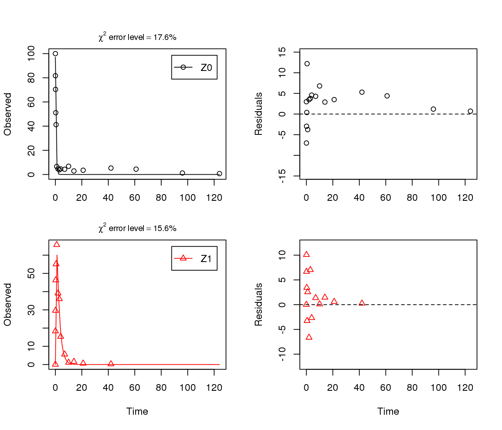
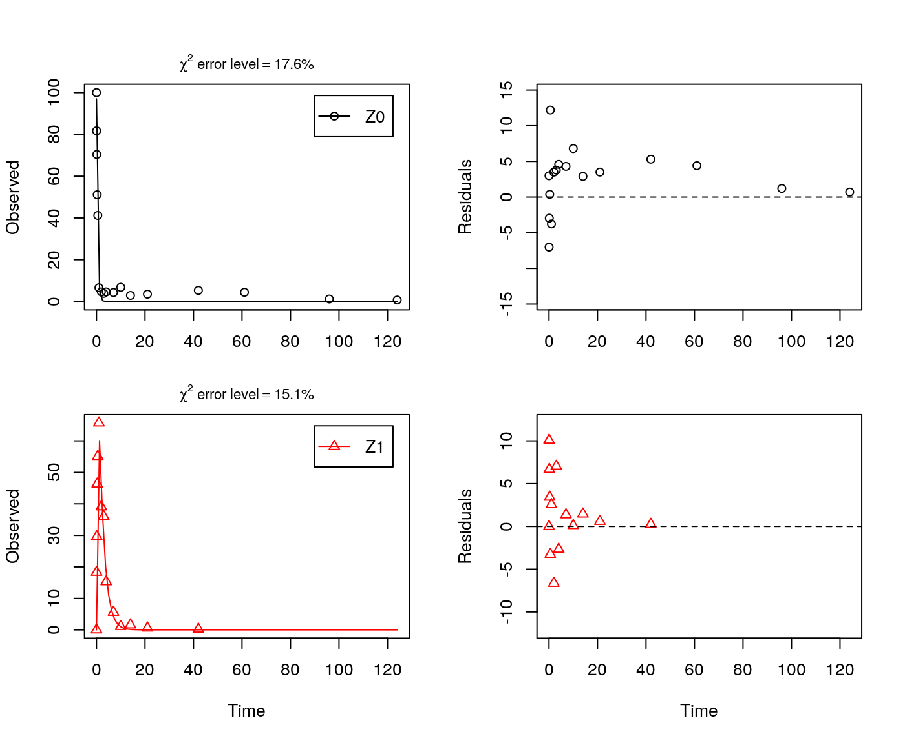
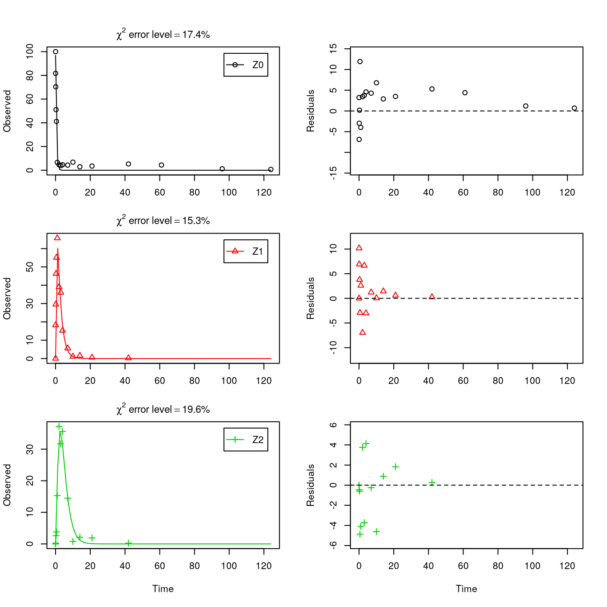
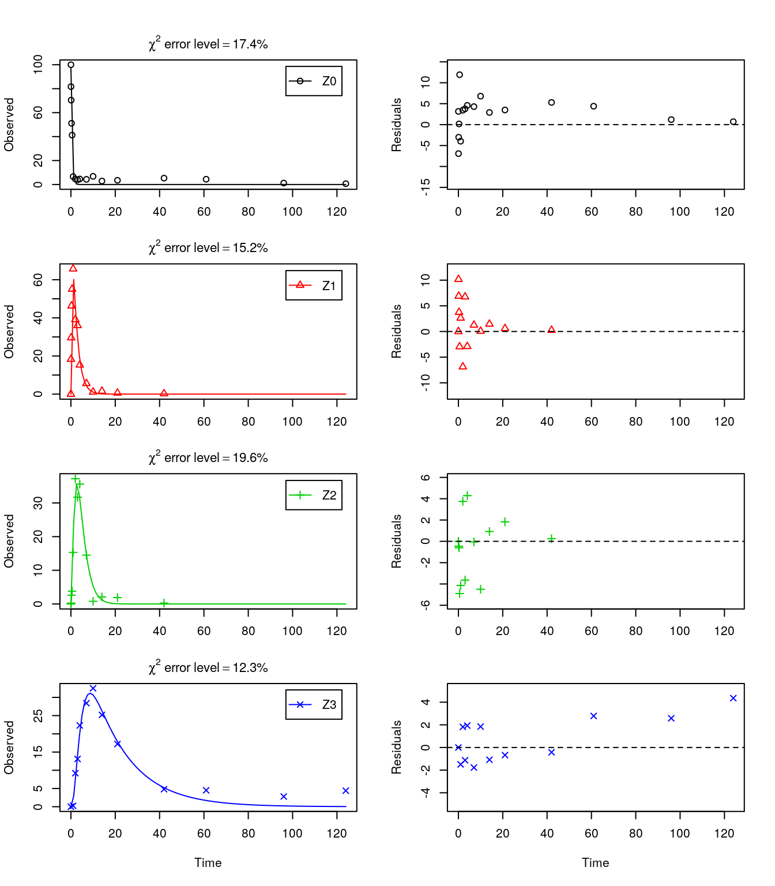
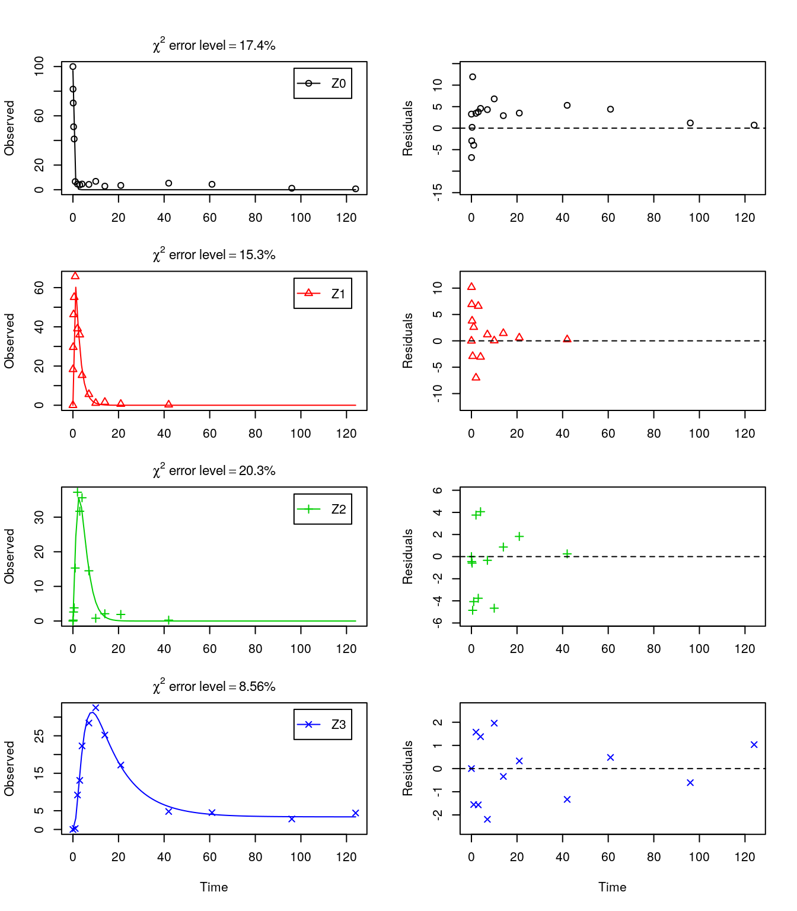
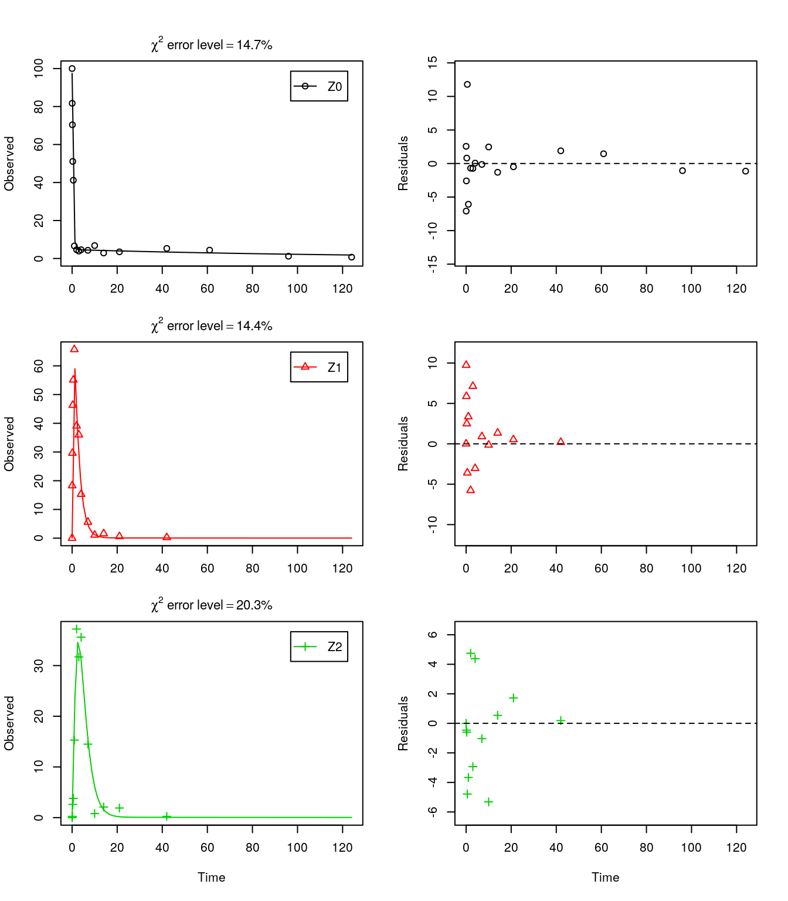
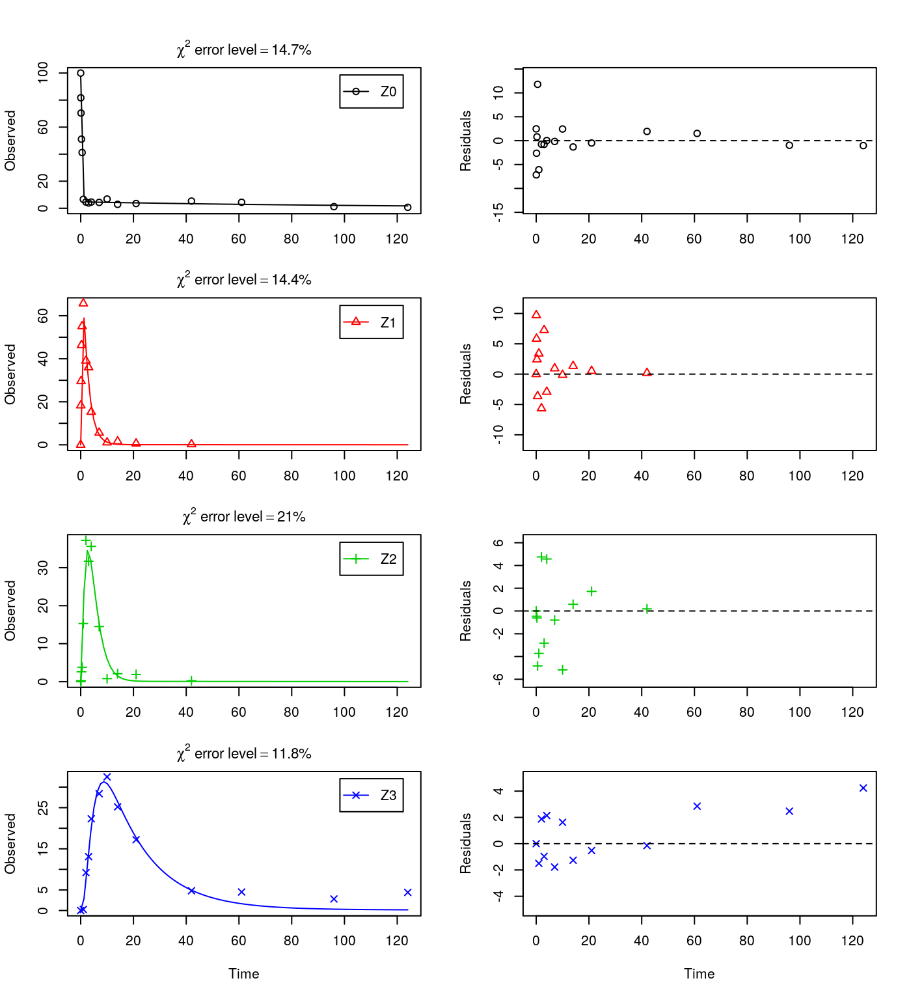
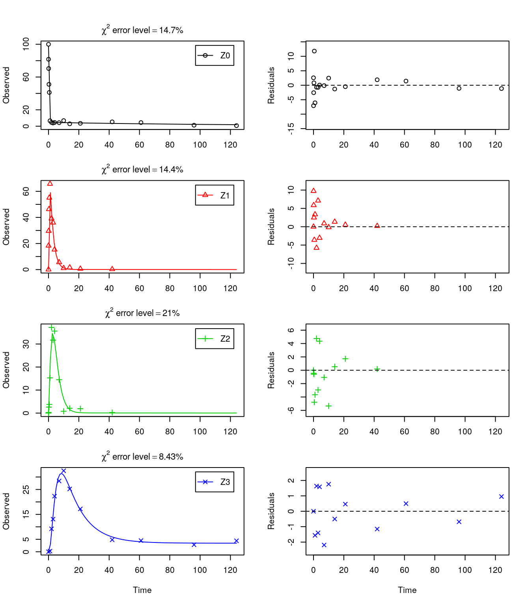
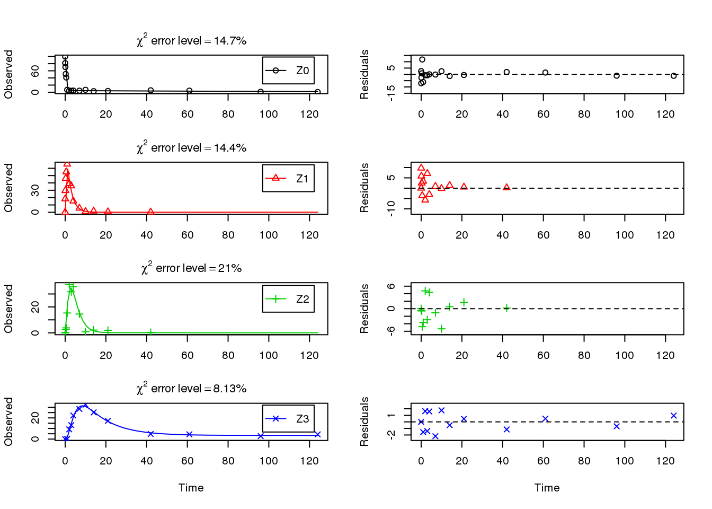
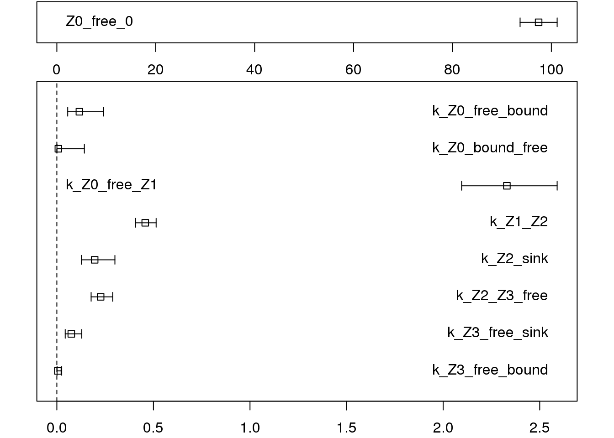

Wissenschaftlicher Berater, Kronacher Str. 12, 79639 Grenzach-Wyhlen, Germany
Privatdozent at the University of Bremen
The following code defines the example dataset from Appendix 7 to the FOCUS kinetics report (FOCUS Work Group on Degradation Kinetics 2014, 354).
library(mkin, quiet = TRUE)
LOD = 0.5
FOCUS_2006_Z = data.frame(
t = c(0, 0.04, 0.125, 0.29, 0.54, 1, 2, 3, 4, 7, 10, 14, 21,
42, 61, 96, 124),
Z0 = c(100, 81.7, 70.4, 51.1, 41.2, 6.6, 4.6, 3.9, 4.6, 4.3, 6.8,
2.9, 3.5, 5.3, 4.4, 1.2, 0.7),
Z1 = c(0, 18.3, 29.6, 46.3, 55.1, 65.7, 39.1, 36, 15.3, 5.6, 1.1,
1.6, 0.6, 0.5 * LOD, NA, NA, NA),
Z2 = c(0, NA, 0.5 * LOD, 2.6, 3.8, 15.3, 37.2, 31.7, 35.6, 14.5,
0.8, 2.1, 1.9, 0.5 * LOD, NA, NA, NA),
Z3 = c(0, NA, NA, NA, NA, 0.5 * LOD, 9.2, 13.1, 22.3, 28.4, 32.5,
25.2, 17.2, 4.8, 4.5, 2.8, 4.4))
FOCUS_2006_Z_mkin <- mkin_wide_to_long(FOCUS_2006_Z)The next step is to set up the models used for the kinetic analysis. As the simultaneous fit of parent and the first metabolite is usually straightforward, Step 1 (SFO for parent only) is skipped here. We start with the model 2a, with formation and decline of metabolite Z1 and the pathway from parent directly to sink included (default in mkin).
## Successfully compiled differential equation model from auto-generated C code.summary(m.Z.2a, data = FALSE)$bpar## Estimate se_notrans t value Pr(>t) Lower
## Z0_0 9.701488e+01 3.55313531 2.730402e+01 1.679194e-21 91.4013833
## k_Z0_sink 6.213452e-10 0.22689429 2.738479e-09 5.000000e-01 0.0000000
## k_Z0_Z1 2.236006e+00 0.16507349 1.354552e+01 7.393893e-14 1.8374087
## k_Z1_sink 4.821248e-01 0.06585366 7.321154e+00 3.551981e-08 0.4005976
## Upper
## Z0_0 102.6283792
## k_Z0_sink Inf
## k_Z0_Z1 2.7210739
## k_Z1_sink 0.5802439As obvious from the parameter summary (the component of the summary), the kinetic rate constant from parent compound Z to sink is negligible. Accordingly, the exact magnitude of the fitted parameter is ill-defined and the covariance matrix is not returned (not shown, would be visible in the complete summary). This suggests, in agreement with the analysis in the FOCUS kinetics report, to simplify the model by removing the pathway to sink.
A similar result can be obtained when formation fractions are used in the model formulation:
## Successfully compiled differential equation model from auto-generated C code.
summary(m.Z.2a.ff, data = FALSE)$bpar## Estimate se_notrans t value Pr(>t) Lower Upper
## Z0_0 97.0148813 3.55314638 27.303936 1.679331e-21 NA NA
## k_Z0 2.2360064 0.21684717 10.311439 3.661734e-11 NA NA
## k_Z1 0.4821248 0.06585372 7.321147 3.552046e-08 NA NA
## f_Z0_to_Z1 1.0000000 0.10147344 9.854795 9.707117e-11 NA NAHere, the ilr transformed formation fraction fitted in the model takes a very large value, and the backtransformed formation fraction from parent Z to Z1 is practically unity. Again, the covariance matrix is not returned as the model is overparameterised.
The simplified model is obtained by setting the list component to .
In the following, we use the parameterisation with formation fractions in order to be able to compare with the results in the FOCUS guidance, and as it makes it easier to use parameters obtained in a previous fit when adding a further metabolite.
## Successfully compiled differential equation model from auto-generated C code.
summary(m.Z.3, data = FALSE)$bpar## Estimate se_notrans t value Pr(>t) Lower Upper
## Z0_0 97.0148816 2.68177104 36.17568 2.363590e-25 91.5215232 102.5082401
## k_Z0 2.2360064 0.14686238 15.22518 2.247007e-15 1.9545318 2.5580166
## k_Z1 0.4821248 0.04268711 11.29439 3.068559e-12 0.4021552 0.5779966As there is only one transformation product for Z0 and no pathway to sink, the formation fraction is internally fixed to unity.
As suggested in the FOCUS report, the pathway to sink was removed for metabolite Z1 as well in the next step. While this step appears questionable on the basis of the above results, it is followed here for the purpose of comparison. Also, in the FOCUS report, it is assumed that there is additional empirical evidence that Z1 quickly and exclusively hydrolyses to Z2.
Z.5 <- mkinmod(Z0 = mkinsub("SFO", "Z1", sink = FALSE),
Z1 = mkinsub("SFO", "Z2", sink = FALSE),
Z2 = mkinsub("SFO"), use_of_ff = "max")## Successfully compiled differential equation model from auto-generated C code.
Finally, metabolite Z3 is added to the model. We use the optimised differential equation parameter values from the previous fit in order to accelerate the optimization.
Z.FOCUS <- mkinmod(Z0 = mkinsub("SFO", "Z1", sink = FALSE),
Z1 = mkinsub("SFO", "Z2", sink = FALSE),
Z2 = mkinsub("SFO", "Z3"),
Z3 = mkinsub("SFO"),
use_of_ff = "max")## Successfully compiled differential equation model from auto-generated C code.m.Z.FOCUS <- mkinfit(Z.FOCUS, FOCUS_2006_Z_mkin,
parms.ini = m.Z.5$bparms.ode,
quiet = TRUE)## Warning in mkinfit(Z.FOCUS, FOCUS_2006_Z_mkin, parms.ini = m.Z.5$bparms.ode, : Optimisation by method Port did not converge.
## Convergence code is 1plot_sep(m.Z.FOCUS)
summary(m.Z.FOCUS, data = FALSE)$bpar## Estimate se_notrans t value Pr(>t) Lower
## Z0_0 96.84024413 2.05881366 47.036916 5.572278e-44 92.70685169
## k_Z0 2.21540096 0.11812759 18.754306 7.736886e-25 1.99050408
## k_Z1 0.47835870 0.02929353 16.329843 3.344317e-22 0.42303496
## k_Z2 0.45166296 0.04418624 10.221801 3.036447e-14 0.37106537
## k_Z3 0.05868971 0.01428961 4.107158 7.256030e-05 0.03598292
## f_Z2_to_Z3 0.47147387 0.05702672 8.267596 2.779011e-11 0.36029541
## Upper
## Z0_0 100.97363656
## k_Z0 2.46570780
## k_Z1 0.54091758
## k_Z2 0.54976682
## k_Z3 0.09572548
## f_Z2_to_Z3 0.58555627endpoints(m.Z.FOCUS)## $ff
## Z2_Z3 Z2_sink
## 0.4714739 0.5285261
##
## $SFORB
## logical(0)
##
## $distimes
## DT50 DT90
## Z0 0.3128766 1.039354
## Z1 1.4490113 4.813512
## Z2 1.5346558 5.098016
## Z3 11.8103701 39.233200This fit corresponds to the final result chosen in Appendix 7 of the FOCUS report. Confidence intervals returned by mkin are based on internally transformed parameters, however.
As the FOCUS report states, there is a certain tailing of the time course of metabolite Z3. Also, the time course of the parent compound is not fitted very well using the SFO model, as residues at a certain low level remain.
Therefore, an additional model is offered here, using the single first-order reversible binding (SFORB) model for metabolite Z3. As expected, the \(\chi^2\) error level is lower for metabolite Z3 using this model and the graphical fit for Z3 is improved. However, the covariance matrix is not returned.
Z.mkin.1 <- mkinmod(Z0 = mkinsub("SFO", "Z1", sink = FALSE),
Z1 = mkinsub("SFO", "Z2", sink = FALSE),
Z2 = mkinsub("SFO", "Z3"),
Z3 = mkinsub("SFORB"))## Successfully compiled differential equation model from auto-generated C code.
summary(m.Z.mkin.1, data = FALSE)$cov.unscaled## NULLTherefore, a further stepwise model building is performed starting from the stage of parent and two metabolites, starting from the assumption that the model fit for the parent compound can be improved by using the SFORB model.
Z.mkin.3 <- mkinmod(Z0 = mkinsub("SFORB", "Z1", sink = FALSE),
Z1 = mkinsub("SFO", "Z2", sink = FALSE),
Z2 = mkinsub("SFO"))## Successfully compiled differential equation model from auto-generated C code.
This results in a much better representation of the behaviour of the parent compound Z0.
Finally, Z3 is added as well. These models appear overparameterised (no covariance matrix returned) if the sink for Z1 is left in the models.
Z.mkin.4 <- mkinmod(Z0 = mkinsub("SFORB", "Z1", sink = FALSE),
Z1 = mkinsub("SFO", "Z2", sink = FALSE),
Z2 = mkinsub("SFO", "Z3"),
Z3 = mkinsub("SFO"))## Successfully compiled differential equation model from auto-generated C code.m.Z.mkin.4 <- mkinfit(Z.mkin.4, FOCUS_2006_Z_mkin,
parms.ini = m.Z.mkin.3$bparms.ode,
quiet = TRUE)
plot_sep(m.Z.mkin.4)
The error level of the fit, but especially of metabolite Z3, can be improved if the SFORB model is chosen for this metabolite, as this model is capable of representing the tailing of the metabolite decline phase.
Z.mkin.5 <- mkinmod(Z0 = mkinsub("SFORB", "Z1", sink = FALSE),
Z1 = mkinsub("SFO", "Z2", sink = FALSE),
Z2 = mkinsub("SFO", "Z3"),
Z3 = mkinsub("SFORB"))## Successfully compiled differential equation model from auto-generated C code.m.Z.mkin.5 <- mkinfit(Z.mkin.5, FOCUS_2006_Z_mkin,
parms.ini = m.Z.mkin.4$bparms.ode[1:4],
quiet = TRUE)
plot_sep(m.Z.mkin.5)
The summary view of the backtransformed parameters shows that we get no confidence intervals due to overparameterisation. As the optimized is excessively small, it seems reasonable to fix it to zero.
m.Z.mkin.5a <- mkinfit(Z.mkin.5, FOCUS_2006_Z_mkin,
parms.ini = c(m.Z.mkin.5$bparms.ode[1:7],
k_Z3_bound_free = 0),
fixed_parms = "k_Z3_bound_free",
quiet = TRUE)
plot_sep(m.Z.mkin.5a)
As expected, the residual plots for Z0 and Z3 are more random than in the case of the all SFO model for which they were shown above. In conclusion, the model is proposed as the best-fit model for the dataset from Appendix 7 of the FOCUS report.
A graphical representation of the confidence intervals can finally be obtained.
mkinparplot(m.Z.mkin.5a)
The endpoints obtained with this model are
endpoints(m.Z.mkin.5a)## $ff
## Z0_free_Z1 Z1_Z2 Z2_sink Z2_Z3_free Z3_free_sink
## 1.0000000 1.0000000 0.4634423 0.5365577 1.0000000
##
## $SFORB
## Z0_b1 Z0_b2 Z3_b1 Z3_b2
## 2.447137325 0.007512576 0.080007563 0.000000000
##
## $distimes
## DT50 DT90 DT50_Z0_b1 DT50_Z0_b2 DT50_Z3_b1 DT50_Z3_b2
## Z0 0.3042974 1.184810 0.2832482 92.26492 NA NA
## Z1 1.5147780 5.031984 NA NA NA NA
## Z2 1.6413852 5.452564 NA NA NA NA
## Z3 NA NA NA NA 8.663521 InfIt is clear the degradation rate of Z3 towards the end of the experiment is very low as DT50_Z3_b2 (the second Eigenvalue of the system of two differential equations representing the SFORB system for Z3, corresponding to the slower rate constant of the DFOP model) is reported to be infinity. However, this appears to be a feature of the data.
FOCUS Work Group on Degradation Kinetics. 2014. Generic Guidance for Estimating Persistence and Degradation Kinetics from Environmental Fate Studies on Pesticides in Eu Registration. 1.1 ed. http://esdac.jrc.ec.europa.eu/projects/degradation-kinetics.